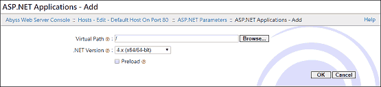
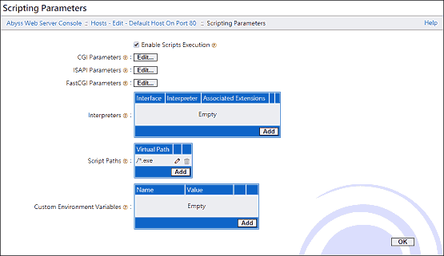

用 C# 堆砌程式：附錄
C# 的未來發展
C# 的未來將由 .NET Core 發展下去
.NET Core 3 下一版將命名為 .NET 5，非但不是 .NET Core 4，連 Core 字眼都移除；預計 2020 年 11 月正式推出。而原本的 .NET Framework 4 則不再更新，4.8 就是最後一版了！這意味著未來 .NET 的發展不想再有 .NET Core 和 .NET Framework 之分，由 .NET 5 取而代之發展下去！
.NET Core 使用 dotnet.exe 編譯程式，沒有 csc.exe 和 vbc.exe。dotnet.exe 具備專案管理的功能，因此寫程式的標準做法，是下 new 參數建立專案範本、下 run 參數執行程式、下 add 參數新增原始碼檔案、下 remove 參數移除原始碼檔案…變成要顧慮專案組態檔，否則無法順利編譯原始碼。對第一次學程式設計的新手反倒是好事！從頭到尾透過 dotnet 指令就能如願看到想要的工作結果，要知道編譯器、資料夾、檔案的路徑關係對初學者來說是很頭大的。
除了跨平台這項優勢外，.NET Core 有更先進的技術與架構，像是自帶 HTTP 伺服器，不用安裝 IIS 就能受用 ASP.NET Core。
如果你現在就要用 .NET Core 寫程式，請至 Microsoft 官網下載：Download .NET。
.NET Framework 沒有最新的 C# 編譯器
都知道有 C# 8 了，但 Windows 10 內建的 csc.exe 只到 C# 5 而已，版本老舊到連 $"{變數名稱}" 語法都不支援 XD
安裝 .NET Framework 4.8 Developer Pack 也沒用，因為自從有 .NET Core 後，就成立 Roslyn 專案，將編譯器獨立出來另行開發，也就是現在的 Microsoft .NET Compiler Platform。這使得 .NET Framework 像 Runtime + API 而已，難怪不叫 SDK，而是 Developer Pack。對照 .NET Core SDK，從字面上便能看出來為何人家能編譯新的 C# 8 語法了 XDD
不想用 dotnet.exe 照範本來編譯程式，想使用最新版本 csc.exe 自由自在編譯，可安裝 Build Tools for Visual Studio！請點進網頁，往下找「Visual Studio 2019 的工具」，展開後下載「Build Tools for Visual Studio 2019」。這工具其實不用安裝 Visual Studio 2019 就能使用，所以可以只安裝 Build Tools 就好，檔案大小不到 100MB。這樣就能用 csc.exe 編譯 C# 8 程式碼了！
如果嫌安裝進來的 Visual Studio Installer 很多餘，只想要編譯器就好，可以在 NuGet Gallery 的 Microsoft.Net.Compilers 按 Download package 下載 *.nupkg 檔，然後以 ZIP 格式解壓開來，裡面的 tools 資料夾就有 csc.exe。事實上這裡才能下載到最新的正式版，Build Tools for Visual Studio 2019 給的往往是測試版或預覽版而已。
.NET Framework 將被 .NET Core 取而代之時，別忘了 Mono 就像接班人！
Mono 是最早跨到 Linux 作業系統的 .NET 開發環境，現已能跨 BSD、Solaris、macOS、Windows。禁不禁得起企業界的考驗我不知道，但對個人寫程式而言，Mono 就跟用整套 GCC 寫程式一樣滿足：
http://www.mono-project.com
雖然已有跨平台的 .NET Core，但 Mono 仍持續更新，可放手寫最新的 C# 語言功能。其實兩者都是開放原始碼專案，現在已是合作關係，相互為 .NET 貢獻成果、共創未來。
在 Mono 可用 csc 編譯 C# 程式碼，不喜歡 dotnet.exe 編譯時要照範本規定、又礙於 Build Tools for Visual Studio 無法離線安裝的話，其實是很不錯的解決方案！Mono 裡面除了 csc 和 vbc 外，還有可跑 ASP.NET 的 xsp，以及其它各項方便的指令工具，善用這些工具帶來的開發效率，並不比 .NET Framework 差！（比超方便的 .NET Core 差就是了）
使用 Mono 的話，要知道 bin 裡面的是 csc.bat，而不是 csc.exe。對於進主控台再編譯和執行的人，感覺不出差異。但對於把編譯和執行寫在批次檔，然後按兩下滑鼠執行的人，就會發現 csc.bat 的動作跟 csc.exe 不一樣。
其實這是 DOS 的老話題，在批次檔調用另一個批次檔就會發生程式已結束，並未繼續往下執行的情況。解決方式是使用 CALL 指令執行批次檔，也就是在 csc.bat 前面加個 CALL：
這樣每一行指令都會正常執行，而不是一閃即逝。
Mono 現在也是用 Roslyn 專案的編譯器，因此不用擔心與 .NET Core 或 .NET Framework 在表現上有太大落差，確實是不錯的選擇！
新舊編譯器各有優缺點
到 C# 5 為止，編譯器是用 C/C++ 寫出來的，以 csc.exe 編譯原始碼時，反應時間只需幾百毫秒。
C# 6 開始，編譯器改用 C# 和 VB.NET 重寫，也就是俗稱的 Roslyn 專案，以 csc.exe 編譯 C# 原始碼時，要啟動平台框架資源，所以反應時間變長，在我的電腦需要將近五秒鐘。[1]
在 Windows 10 使用新舊 csc.exe 產生出來的 .NET 程式，表現是一樣的，都是屬於符合 .NET Framework 的中間程式，只差在語法方便與否，因此舊的編譯器不見得要淘汰，至少它非常快！
用 dotnet.exe 表現出來的程式就不見得一樣了，因為要適應不同作業系統！這點只有新版編譯器做得到，因此沒辦法退回舊版編譯器，也就無從選擇了～
在 .NET Core 用 csc.dll 直接編譯 *.cs 原始碼
編譯
首先寫個 Hello, world! 程式碼：
然後這樣編譯原始碼：
「路徑」是 dotnet 所在資料夾，「版號」和「版名」隨不同版本而異，請自行查閱下載的 SDK 取什麼名稱，這些都是單一資料夾，不會混淆。
成功的話會編譯出 MainProgram.exe。
視原始碼用到的物件，往後需自行用 -r 參數追加更多名稱空間上去。例如用到 System.Collections.Generic.List，就載入 System.Collections.dll。
執行
.NET Core 編譯出來的程式碼是跨平台的新架構，有別於原生架構的 .NET Framwork，因此你無法在 Windows 直接點兩下 MainProgram.exe 執行程式，必須透過 dotnet.exe 執行。
這需要建立 *.runtimeconfig.json 組態檔，視執行檔的名稱來命名，因此命名為 MainProgram.runtimeconfig.json，裡面寫上：
{
"runtimeOptions": {
"framework": {
"name": "Microsoft.NETCore.App",
"version": "版號"
}
}
}
「版號」要與 路徑\shared\Microsoft.NETCore.App\ 裡面的資料夾名稱一樣，執行程式時將從裡面載入需要的程式庫。
最後用 dotnet 指令執行：
就會看到 Hello, world! 的輸出訊息了。
改用 JScript 設計 .NET Framework 程式
.NET Framework 裡面有 jsc.exe，能編譯 JScript 程式，這表示可以用 JScript 寫 .NET Framework 程式：
若覺得物件導向程式語言的 C# 寫起來太囉嗦，純粹只想受用 .NET Framework 程式庫的功能，改用腳本語言的 JScript 會有不錯的體驗～
學習這個語言，可下載《JScript 8.0 中文手册 chm 版》，下載頁面有「解压密码」，別忘了複製起來！
字元編碼
jsc.exe 在預設情況下，只能編譯符合 ASCII 的字元編碼，因此原始碼裡面有中文的話，必須以 Big5 字元編碼儲存，使用 UTF-8 或其它字元編碼的話，編譯時會有問題。
若想使用 UTF-8 字元編碼，必須下參數：
/codepage:65001
資料型態
畢竟 .NET Framework 是強型態的，所以寫 JScript 程式難免會遇到資料型態的問題。
JScript 可以在宣告變數時，使用 : 符號來指定資料型態，例如：
var a : String[] = ["AAA", "BBB", "CCC"];
這語法也能用在函式的傳回值型態。
類別、介面、套件
用 JScript 也是可以寫類別來用的：
class 類別名稱 extends 父類別{
var 屬性 : 資料型態 = 初始值;
function 方法() : 傳回型態{
}
function 類別名稱(){
}
}
前面也能冠上 public 或 private 限制存取權限。
也支援介面：
interface 介面名稱{
function 方法();
}
class 類別名稱 implements 介面名稱{
function 方法(){
}
}
還有套件：
package 名稱空間{
class 類別名稱{
}
}
new 名稱空間.類別名稱();
import 名稱空間;
new 類別名稱();
泛型
JScript .NET 不支援泛型語法，因此無法正常操作像是 System.Collections.Generic 的類別。
真的要用泛型的類別，只能先用 C# 重新包裝成不用泛型的類別，再編譯成 *.dll 給 JScript .NET 使用。
Windows Forms 的事件處理
若 C# 的事件寫法為：
那麼在 JScript 就改為：
error JS1259: 被參考的組件相依於另一個未被參考或找不到的組件
加入 import Accessibility 這行程式即可解決問題！
error JS1183: 一個以上的方法或屬性符合此引數清單
這問題的解決辦法，就是不要把程式碼直接寫在全域範疇跑，看是要寫在 (function(){})() 裡面，或者寫在 function xxx(){} 裡面再呼叫 xxx() 執行程式。
這是因為 ECMAScript 的全域範疇，其實是最頂級物件的區域範疇。在網頁瀏覽器的 JavaScript 就是 window 物件，在 .NET 的 JScript 則是 Object 物件。直接把程式碼寫在全域，變數和函式往往變成 Object 的成員，而不是獨立的領域範疇。只有把程式寫在函式裡面，才不會汙染區域範疇。
error JS1112: 必須是類型名稱
這問題發生在物件的成員和指定的類別名稱相同：
class Form1 extends Form{
function Form1(){
this.Size = new Size(640, 480);
}
}
這跟 ECMAScript 的作用域有關，在 this 也有 Size 的情況下，編譯器認為 new 的 Size 是指 this 的 Size，而不是 import 進來的 Size。[2]
所以解決辦法就是 new 後面的類別用完整名稱空間：
this.Size = new System.Drawing.Size(640, 440);
這問題在多型機制下也會發生，像是：
this.ClientSize = new Size(640, 440);
這是 ECMAScript 特性上的問題，所以寫 JScript .NET 經常會發生這種事，規避不了。請習以為常，看到編譯器拋出這訊息，隨即補上完整名稱空間就好，不用為此感到焦躁或挫折。
如果就是很反感，那一律用完整名稱空間寫程式吧！這樣寫 JScript .NET 程式的人非常非常多，你不會是少數派 :)
其實 .NET Framework 的屬性和方法別用大寫開頭，而是小寫開頭，就不會有這鳥事了！
print()
.NET 的 JScript 可以用 print() 來輸出，取代落落長的 Console.WriteLine()，這樣一來也不用 import System 了。
new
new 後面的類別，不需要參數的話，可以省略 () 符號，例如 var button = new Button; 或 Application.Run(new Form);。
雖然這不是 JScript 才有的特性，ECMAScript 就是這樣定義。
SortedSet
如何執行 ASP.NET 程式
ASP.NET 算是另外一種程式設計，只是腳本語言方面，可以用 C# 或 VB.NET 而已：
ASP.NET overview
ASP.NET 的程式設計手法有幾次進化，目前有三種寫法：類似傳統 ASP 的 Web Forms（新舊不完全相容）、ASP.NET 主打的 Web Pages（最新的 Razor 標記語言其實也歸類於此）、.NET Framework 特性的 MVC（除了職責分離，已編譯的關係執行效率更好）。
但是光有 .NET 並無法執行 ASP.NET，得在支援 ASP.NET 的網頁伺服器上跑。
.NET Core
.NET Core 自帶 Kestrel 網頁伺服器，專案裡的 ASP.NET 程式直接用 dotnet 指令就能啟動系統、運行程式 👍
Mono
Mono 自帶 XSP 網頁伺服器，直接在程式碼所在位置就能啟動與瀏覽。但不相容 ASP 舊語法，也不支援 ASP.NET 近年推出的新語法，只能寫 Web Forms 程式。
.NET Framework
.NET Framework 必須另外安裝支援 ASP.NET 的網頁伺服器，麻煩的是，支援 ASP.NET 的產品不多，選擇很少 😭
IIS
Windows 10 不分家用版、專業版、企業版，都支援 IIS 功能！在「開啟或關閉 Windows 功能」勾選「Internet Information Services」的「World Wide Web 服務→ASP.NET 4.8」即可。
建議也勾選「Web 管理工具」，以方便在「開始→Windows 系統管理工具→Internet Information Services (IIS) 管理員」用圖形化介面設定網站。
IIS Express
其它不提供 IIS 的家用版 Windows，可下載 IIS Express：
http://www.microsoft.com/zh-TW/download/details.aspx?id=48264
安裝後，即可在 C:\Program Files\IIS Express\ 執行 iisexpress.exe 啟動支援 ASP.NET 的網頁伺服器。
不過在那之前得設定才行！
如果純粹只想練習或測試 ASP.NET 程式碼，沒打算對外連線的話[3]，請把下列資料夾裡面的檔案：
C:\Program Files\IIS Express\config\templates\PersonalWebServer\
全部複製到：
C:\Users\[使用者名稱]\Documents\IISExpress\config\
即可設定好一個只能用 localhost:8080 連線的網頁伺服器。
然後把 ASP.NET 程式通通放在：
C:\Users\[使用者名稱]\Documents\My Web Sites\WebSite1\
最後下 iisexpress /site:WebSite1 指令啟動 IIS，就能在網頁瀏覽器跑 ASP.NET 了！
想修改位置甚至對外連線的話，編輯 config 資料夾的 apolicationhost.config 檔案，找 WebSite1 修改。但會遇到不少安全性的問題導致無法順利外連，請上網搜尋資料解決吧～
Abyss Web Server X1
不喜歡 IIS 的話，可以考慮免費的 Abyss Web Server X1：
http://aprelium.com
這款網頁伺服器雖然知名度不高，但也有十幾年經營歷史了，至今仍在更新。
即使是 2019 年最新版 2.12，檔案也只有 4MB，能跑 Execute CGI、Perl CGI、PHP FastCGI、ASP.NET 4.0，非常好用的程式！


有時候怎麼設定都無法正常使用 CGI 或 ASP.NET！有可能不是網頁伺服器的問題，而是網頁瀏覽器的快取有問題。清理一下看看，或許就能正常使用了！
離線查閱 .NET API
Microsoft 的 API 文件寫得有夠好！不但容易查詢與辨讀，而且經常每個 method 就附上範例，立刻就能明白該如何應用。備註的部分更是精彩，能學到很多觀念，徹底了解為何使用、為何不使用。
這麼好的文件，唯一缺點就是只提供線上閱讀，沒有打包下載的檔案。是有 PDF 可下載，但 API 的部分只有清單，點下去還是連到網站閱讀。
沒有可供離線閱讀的文件，哪天需要在沒有網路的環境寫程式，可就麻煩了 😱
辦法一：使用 Visual Studio Community 的 Help Viewer 即可離線下載
安裝 Visual Studio Community 時勾選 Help Viewer，就能在 Visual Studio Community 中叫出 Help Viewer，然後選擇下載 .NET API Reference，即可將整套文件安裝到電腦裡離線閱讀。
Visual Studio Community 對學生、開放原始碼及個人開發人員是免費的！如果電腦跑得動的話，不妨使用這套威力強大無比的 IDE 寫 C# 開發 .NET 程式：
http://visualstudio.microsoft.com/zh-hant/vs/community/
辦法二：下載官方網站引據的資料
如果你檢視線上 .NET API 網頁的原始碼，會發現資料是引據自：
http://github.com/dotnet/dotnet-api-docs/
http://github.com/dotnet/dotnet-api-docs.zh-tw/
因此可以到 GitHub 把整個專案按 Download ZIP 下載回來，再從 XML 中剖析出資料。
然而自己剖析 XML 太費力氣，不妨下載 mdoc 轉為 HTML：
http://github.com/mono/api-doc-tools/
或 Microsoft 官方採用的 DocFX：
http://github.com/dotnet/docfx/
由於中文版資料有缺幾樣文件，建議先下載英文版，再下載中文版把資料覆蓋過去。
辦法三：離線文件瀏覽器 Zeal
不介意看英文 API 文件的話，可下載蒐集各種程式語言說明文件的離線閱讀軟體 Zeal：
http://zealdocs.org
啟動軟體，按 Docsets → Available → NET Framework → Download，即可開始下載。
辦法四：Mono 的命令列文件檢視器
用 Mono 的話，內附能在命令列看文件的檢視器：
這樣就會產生 System.Object 的說明文件，並輸出為 doc.html 檔案，用網頁瀏覽器就能點來看。
辦法五：自己邊寫 C# 程式時邊列出類別的成員來看
自己寫程式輸出類別或結構的成員，即可知道有哪些功能可用。資訊雖然無法像文件那樣豐富，但這招蠻順手的：
混在一起不好讀，想各別列出來看的話，可用 GetConstructors()、GetFields()、GetProperties()、GetMethods()、GetEvents()、GetEnumNames()、GetEnumValues()、GetInterfaces()。
Effective C#
C# 語言慣用語法
偏好隱含型別的區域變數
偏好 readonly 而非 const
偏好 is 或 as 運算子而非型別轉換
以內插字串取代 string.Format()
對文化特定字串偏好 FormattableString
避免字串型別 API
以 delegate 表示 callback
對事件叫用使用空條件運算子
減少 boxing 與 unboxing
只對基底類別更新使用 new 修飾詞
.NET 資源管理
認識 .NET 資源管理
偏好成員初始化程序而非指派陳述
對靜態類別成員進行適當的初始化
減少重複的初始化邏輯
避免建構不必要的物件
絕不在建構元中呼叫虛擬函式
實作標準的 Dispose 模式
使用泛型
定義最少與足夠的約束
使用執行期型別檢查特化泛型演算法
以 IComparable 與 IComparer 實作排序關係
建構支援 Disposable 型別參數的泛型類別
支援泛型的共變數與反變數
使用 delegate 定義型別參數的方法約束
勿於基底類別或界面建構泛型特化
偏好泛型方法，除非型別參數是實例欄位
除泛型界面外還要實作傳統界面
以擴充方法加入最少的界面合約
以擴充方法加強建構型別
使用 LINQ
偏好以 Iterator 方法回傳集合
偏好查詢語法而非廻圈
為序列建構可組合 API
從動作、述詞與函式中解耦迭代
被請求時產生序列項目
使用函式參數解耦
不要過載擴充方法
認識查詢表示式如何對應方法呼叫
在查詢中偏好惰性求值而非積極求值
偏好 lambda 表示式而非方法
避免在函式與動作中拋出例外
區分提前與延遲執行
避免捕捉昂貴的資源
區分 IEnumerable 與 IQueryable 資料來源
使用 Single() 與 First() 以強制查詢的語意結果
避免修改限界變數
例外的最佳做法
以例外回報方法約定失敗
以 using 與 try/final 清理資源
建構完整的應用程式專屬例外類別
偏好強例外保證
偏好例外過濾而非 catch 與重新拋出
利用例外過濾的副作用
More Effective C#
處理資料型別
使用屬性取代可存取的資料成員
可變動的資料優先使用隱藏屬性
實值型別優先使其具不可變性
區分實值與參考型別
確保 0 是實值型別的有效狀態
確保屬性運作如資料一般
使用 Tuples 限制型別的範圍
在匿名型別上定義區域函式
了解多種相等概念之間的關係
了解 GetHashCode() 的陷阱
API 設計
在你的 API 中避免轉換運算子
使用選擇性引數減少方法的多載
限制型別的可見性
優先定義並實作介面進行繼承
了解介面與 Virtual Method 之間差異
為通知實作事件模式
避免傳回內部類別物件的參考
優先使用 Override 替代 Event Handler
避免在基底類別中定義方法多載
了解事件如何增進物件之間執行期的耦合
只宣告 Nonvirtual Event
建立清楚的、最少的，以及完整的方法群
部分類別的建構函式、更動子與 Event handler 使用部分方法
避免使用 ICloneable，因為它限制你的設計選擇
Array 引數限制只使用 params 陣列
在 Iterators 與 Async 方法中使用區域函式啟動立即錯誤回報
以 Task 為基礎的非同步程式設計
非同步工作使用 Async 方法
永遠不要寫 async void 方法
避免結合同步與非同步方法
避免執行緒配置及 Context Switchesv
避免非必要的封送處理（Marshalling）Contextv
使用 Task 物件合成非同步工作
考慮實作 Task 取消協定（Task Cancellation Protocol）
緩衝擴充的非同步回傳值
平行處理
學習 PLINQ 如何實作平行演算法
建構有考慮例外情況的平行演算法
使用執行緒區集取代建立執行緒
使用 BackgroundWorker 做跨執行緒通訊
了解 XAML 環境中的跨執行緒呼叫
使用 lock() 作為同步處理的首選
鎖定 Handles 使用最小可能的範圍
避免在鎖定的區段呼叫不明的程式碼
動態程式設計
了解動態程式設計的利弊
透過動態型別運用泛型引數執行期的型別
Data-Driven 動態型別使用 DynamicObject 或 IDynamicMetaObjectProvider
了解如何運用 Expression API
在公開的 API 中減少動態物件的使用
參與全球 C# 社群
尋求最好的答案，而不是最受歡迎的答案
參與規格及程式碼的訂定
考慮用分析器自動化慣用法